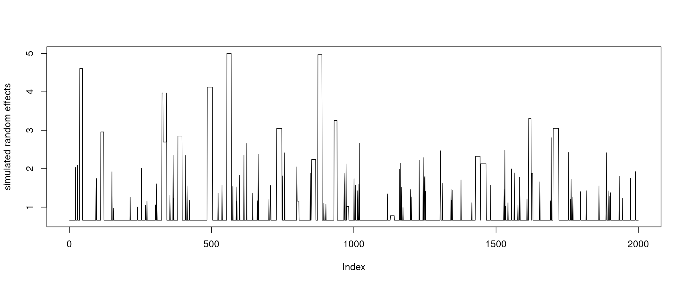
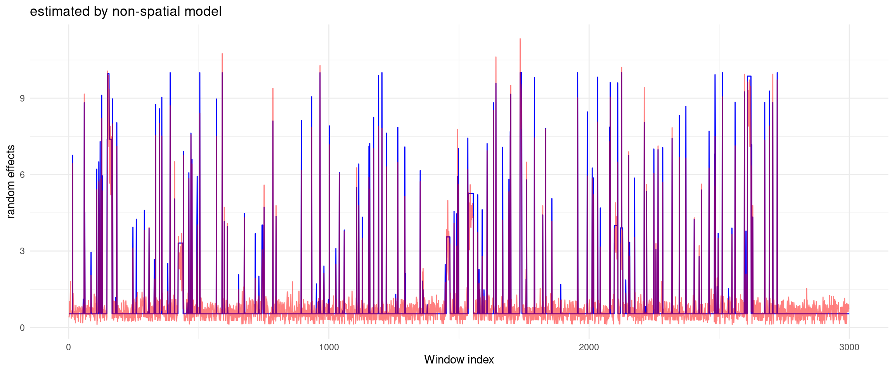
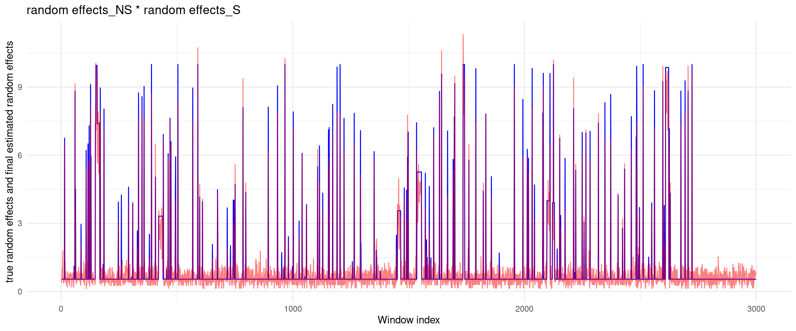
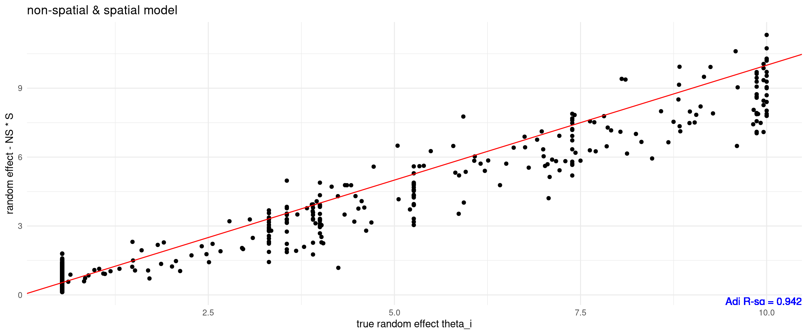
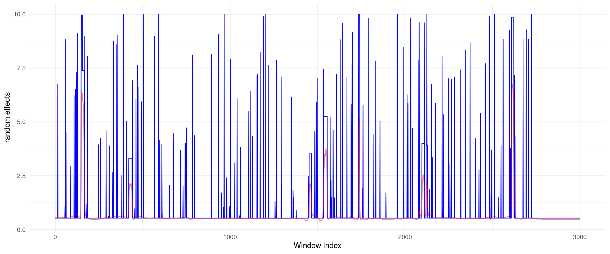
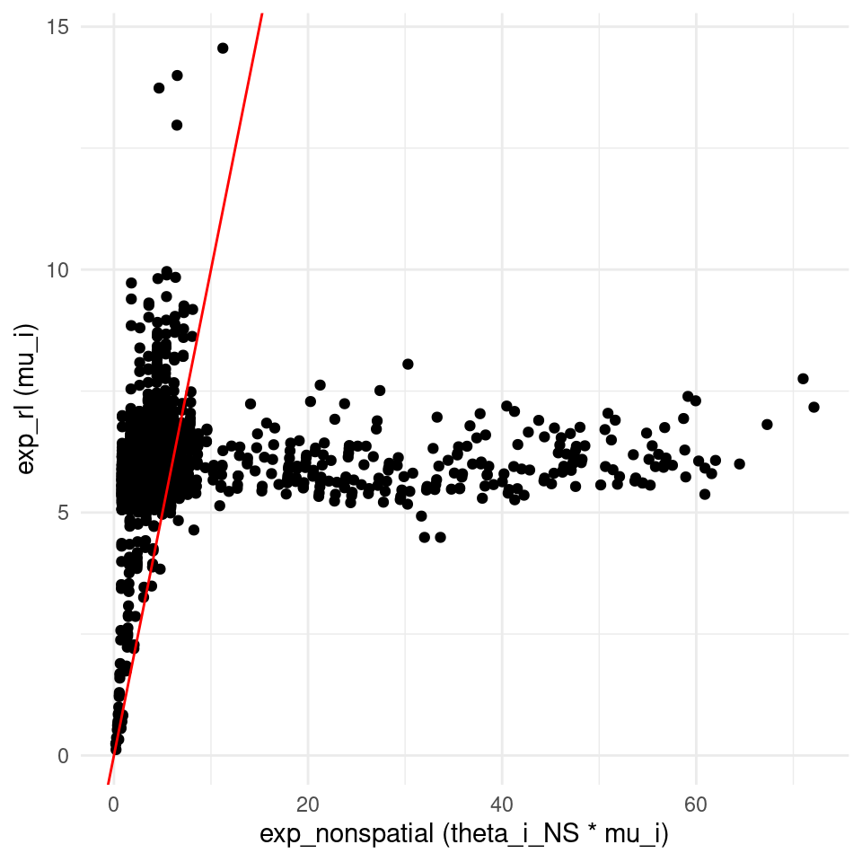
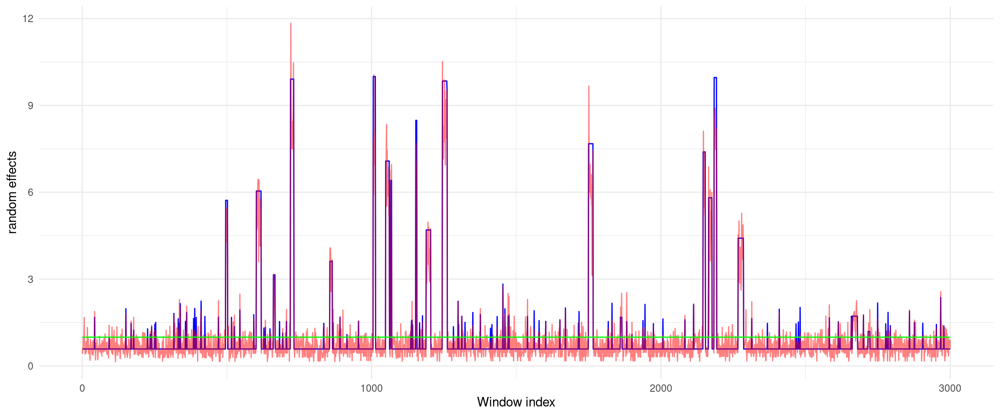
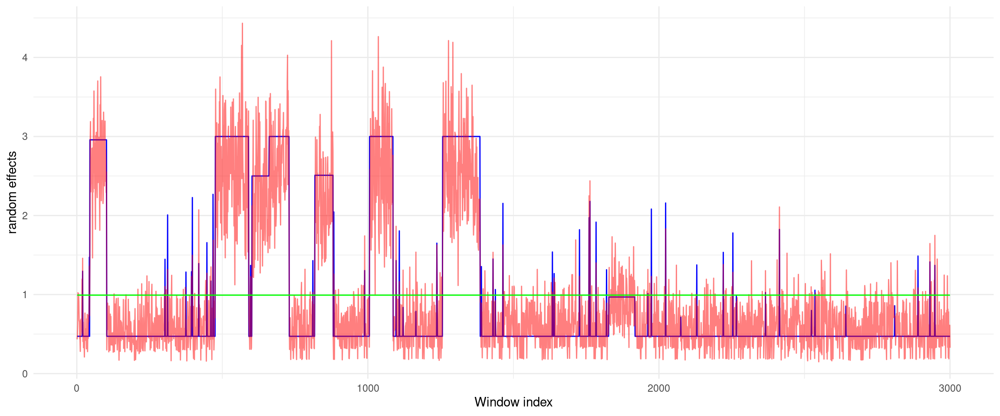
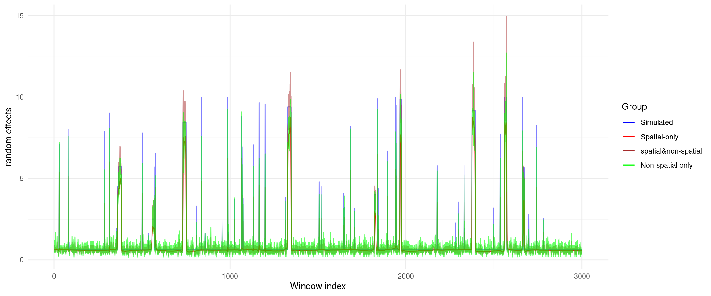

Last updated: 2023-10-16
Checks: 6 1
Knit directory: mutation_rate/
This reproducible R Markdown analysis was created with workflowr (version 1.7.0). The Checks tab describes the reproducibility checks that were applied when the results were created. The Past versions tab lists the development history.
The R Markdown file has unstaged changes. To know which version of
the R Markdown file created these results, you’ll want to first commit
it to the Git repo. If you’re still working on the analysis, you can
ignore this warning. When you’re finished, you can run
wflow_publish to commit the R Markdown file and build the
HTML.
Great job! The global environment was empty. Objects defined in the global environment can affect the analysis in your R Markdown file in unknown ways. For reproduciblity it’s best to always run the code in an empty environment.
The command set.seed(20230228) was run prior to running
the code in the R Markdown file. Setting a seed ensures that any results
that rely on randomness, e.g. subsampling or permutations, are
reproducible.
Great job! Recording the operating system, R version, and package versions is critical for reproducibility.
Nice! There were no cached chunks for this analysis, so you can be confident that you successfully produced the results during this run.
Great job! Using relative paths to the files within your workflowr project makes it easier to run your code on other machines.
Great! You are using Git for version control. Tracking code development and connecting the code version to the results is critical for reproducibility.
The results in this page were generated with repository version 532dcdb. See the Past versions tab to see a history of the changes made to the R Markdown and HTML files.
Note that you need to be careful to ensure that all relevant files for
the analysis have been committed to Git prior to generating the results
(you can use wflow_publish or
wflow_git_commit). workflowr only checks the R Markdown
file, but you know if there are other scripts or data files that it
depends on. Below is the status of the Git repository when the results
were generated:
Ignored files:
Ignored: .Rhistory
Unstaged changes:
Modified: analysis/denovo_simulation_snons.Rmd
Note that any generated files, e.g. HTML, png, CSS, etc., are not included in this status report because it is ok for generated content to have uncommitted changes.
These are the previous versions of the repository in which changes were
made to the R Markdown
(analysis/denovo_simulation_snons.Rmd) and HTML
(docs/denovo_simulation_snons.html) files. If you’ve
configured a remote Git repository (see ?wflow_git_remote),
click on the hyperlinks in the table below to view the files as they
were in that past version.
| File | Version | Author | Date | Message |
|---|---|---|---|---|
| Rmd | 5d7dd7e | XSun | 2023-10-11 | update |
| html | 5d7dd7e | XSun | 2023-10-11 | update |
| Rmd | 046cebb | XSun | 2023-09-12 | update |
| html | 046cebb | XSun | 2023-09-12 | update |
| Rmd | 4718a17 | XSun | 2023-09-12 | update |
| html | 4718a17 | XSun | 2023-09-12 | update |
| Rmd | a2dddec | XSun | 2023-09-11 | update |
| html | a2dddec | XSun | 2023-09-11 | update |
| Rmd | 64d2b39 | XSun | 2023-09-07 | update |
| html | 64d2b39 | XSun | 2023-09-07 | update |
| Rmd | 3683537 | XSun | 2023-09-06 | update |
| html | 3683537 | XSun | 2023-09-06 | update |
In this part, we combined the spatial and non-spatial models.

Estimating the random effect \(\hat\theta_i^{NS}\) with non-spatial model
Using \(\hat\theta_i^{NS} * \mu_i\) as \(\mu_{i_{new}}\) in spatial model, using smashgen to smooth the random effect \(\hat\theta_i^{S}\)
The final estimated random effect \(\hat\theta_i = \hat\theta_i^{S} * \hat\theta_i^{NS}\)
[1] "maximum random effects = 10"

[1] "then we used dat$exp*theta_est_NS as new dat$exp, and used smashgen to smooth the estimation"
[1] "the final estimated random effects = random effects_NS * random effects_S "

It’s weird that the smoothed random effects are constant. So we did more analysis to figure out what happened.
If we smooth the random effects using origin roulette expected mutation rate, we have:

the smoothing looks ok, the only difference is that the earlier expected rate was computed from \(\hat\theta_i^{NS} * \mu_i\), (where \(\mu_i\) is the roulette expected mutation rate) and the current expected rate is \(\mu_i\),
so we compare the \(\mu_i\) and \(\hat\theta_i^{NS} * \mu_i\):
ggplot(data, aes(x = exp_nonspatial, y = exp_rl)) +
geom_point(color = "black") +
geom_abline(intercept = 0, slope = 1, color = "red") +
labs(x = "exp_nonspatial (theta_i_NS * mu_i)",
y = "exp_rl (mu_i)") +
theme_minimal()
For the non-spatial model, we very the gamma prior alpha from 5 to 50 to check if the results look ok. The model behavior depends on the alpha parameter in the Gamma prior. As alpha increases (stronger prior), the non-spatial model basically shrinks the NS random effects to 1, then the model should reduce to spatial models
[1] "true alpha = 5"
[1] "true alpha = 10"
[1] "true alpha = 30"
[1] "true alpha = 50"
We used larger hot-spots, but making the max.effects weaker. because of the weaker max. effects, the non-spatial model is unlikely to find all random effects, then the spatial model may do better.

[1] "true alpha = 5"
| Version | Author | Date |
|---|---|---|
| 4718a17 | XSun | 2023-09-12 |
| Version | Author | Date |
|---|---|---|
| 4718a17 | XSun | 2023-09-12 |
[1] "the final estimated random effects = random effects_NS * random effects_S "
| Version | Author | Date |
|---|---|---|
| 4718a17 | XSun | 2023-09-12 |
| Version | Author | Date |
|---|---|---|
| 4718a17 | XSun | 2023-09-12 |
| Version | Author | Date |
|---|---|---|
| 5d7dd7e | XSun | 2023-10-11 |
| Version | Author | Date |
|---|---|---|
| 5d7dd7e | XSun | 2023-10-11 |
[1] "the final estimated random effects = random effects_NS * random effects_S "
| Version | Author | Date |
|---|---|---|
| 5d7dd7e | XSun | 2023-10-11 |
| Version | Author | Date |
|---|---|---|
| 5d7dd7e | XSun | 2023-10-11 |

[1] "spatial only"[1] "non-spatial only"[1] "sptial & non-spatial "
sessionInfo()R version 4.2.0 (2022-04-22)
Platform: x86_64-pc-linux-gnu (64-bit)
Running under: CentOS Linux 7 (Core)
Matrix products: default
BLAS/LAPACK: /software/openblas-0.3.13-el7-x86_64/lib/libopenblas_haswellp-r0.3.13.so
locale:
[1] C
attached base packages:
[1] stats graphics grDevices utils datasets methods base
other attached packages:
[1] data.table_1.14.2 gridExtra_2.3 ggplot2_3.3.5
loaded via a namespace (and not attached):
[1] Rcpp_1.0.8.3 highr_0.9 pillar_1.7.0 compiler_4.2.0
[5] bslib_0.3.1 later_1.3.0 jquerylib_0.1.4 git2r_0.30.1
[9] workflowr_1.7.0 tools_4.2.0 digest_0.6.29 gtable_0.3.0
[13] jsonlite_1.8.0 evaluate_0.15 lifecycle_1.0.1 tibble_3.1.7
[17] pkgconfig_2.0.3 rlang_1.0.5 DBI_1.1.2 cli_3.6.1
[21] rstudioapi_0.13 yaml_2.3.5 xfun_0.30 fastmap_1.1.0
[25] withr_2.5.0 dplyr_1.0.9 stringr_1.4.0 knitr_1.39
[29] generics_0.1.2 fs_1.5.2 vctrs_0.4.1 sass_0.4.1
[33] tidyselect_1.1.2 rprojroot_2.0.3 grid_4.2.0 glue_1.6.2
[37] R6_2.5.1 fansi_1.0.3 rmarkdown_2.14 farver_2.1.0
[41] purrr_0.3.4 magrittr_2.0.3 whisker_0.4 scales_1.2.0
[45] promises_1.2.0.1 ellipsis_0.3.2 htmltools_0.5.2 assertthat_0.2.1
[49] colorspace_2.0-3 httpuv_1.6.5 labeling_0.4.2 utf8_1.2.2
[53] stringi_1.7.6 munsell_0.5.0 crayon_1.5.1